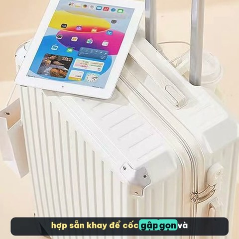

공항에서 커피 들지 마세요! 컵홀더·아이패드 거치 다기능 캐리어 리뷰
여행 갈 때마다 한 손엔 커피, 한 손엔 스마트폰을 들고 캐리어를 끄느라 고생하셨나요? 컵홀더와 거치대가 일체형으로 설계된 이 캐리어 하나면 공항 대기 시간이 훨씬 여유로워집니다.
한국인의 '아아' 사랑을 위한 맞춤형 설계
한국인에게 공항에서의 아이스 아메리카노는 포기할 수 없는 즐거움입니다. 하지만 티켓팅을 하거나 여권을 찾을 때 커피 잔은 늘 짐이 되곤 하죠. 이 제품은 캐리어 뒷면에 접이식 컵홀더가 내장되어 있어, 이동 중에도 음료를 안전하게 거치할 수 있습니다. 사용하지 않을 때는 깔끔하게 접어둘 수 있어 디자인을 해치지 않습니다.
대기 시간의 지루함을 없애주는 아이패드 거치대 & USB 포트
비행기 연착이나 긴 대기 시간에도 걱정 없습니다. 캐리어 상단 손잡이 부근에 스마트폰 및 아이패드 거치대가 있어 유튜브나 넷플릭스를 편하게 시청할 수 있습니다. 또한, 내부에 보조배터리를 연결해두면 외부 USB 충전 포트를 통해 이동 중에도 간편하게 기기를 충전할 수 있어 '배터리 압박'에서 자유로워집니다.
아파트 복도에서도 조용한 저소음 휠 & 파스텔 디자인
한국의 아파트나 빌라 복도에서 캐리어 끄는 소리가 신경 쓰였다면 주목하세요. 이 제품은 360도 회전 저소음 더블 휠을 채택하여 이른 새벽이나 늦은 밤 이동 시에도 소음을 최소화했습니다. 감성적인 파스텔 컬러는 수하물 수취대에서 내 짐을 한눈에 찾기 쉽게 도와주며, 인스타 감성 사진 연출에도 제격입니다.
Pros
- ✅ 컵홀더 내장으로 공항에서 양손의 자유를 보장함
- ✅ 아이패드/스마트폰 거치대가 있어 영상 시청 시 편리함
- ✅ 외부 USB 포트로 이동 중 간편한 충전 가능
- ✅ 부드럽고 조용한 저소음 휠 적용
Cons & Checkpoints
- ⚠️ 보조배터리는 별도로 구매하여 내부에 연결해야 함
- ⚠️ 너무 큰 사이즈의 텀블러는 컵홀더에 들어가지 않을 수 있음
FAQ
기내 반입이 가능한 사이즈인가요?
일반적인 20인치 모델의 경우 대부분의 항공사 기내 반입 규격을 충족하지만, 항공사마다 상세 규정이 다를 수 있으니 이용하시는 항공사의 수하물 규정을 미리 확인하시는 것을 권장합니다.
USB 충전은 어떻게 작동하나요?
캐리어 내부 전용 포켓에 본인의 보조배터리를 연결한 뒤, 외부 포트에 케이블을 꽂아 사용하는 방식입니다. 배터리 자체가 내장된 제품이 아니므로 폭발 위험 등 안전 문제에서 비교적 자유롭습니다.
컵홀더가 튼튼한가요?
일반적인 테이크아웃 커피 컵이나 500ml 생수병을 거치하기에 충분한 강도를 가지고 있습니다. 다만, 과도하게 무거운 물건을 올릴 경우 파손의 위험이 있으니 주의가 필요합니다.